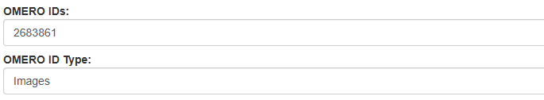
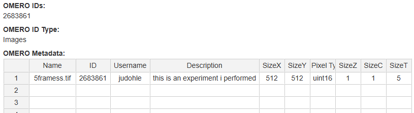

omero_JSONQueryToolbox: Integrating OMERO data
Integrate links and metadata for images deposited in OMERO in your ELN by using the JSON API of OMERO. This guide will walk you through setting up the omero_JSONQueryToolbox at your institution, including all necessary scripts and step-by-step instructions.
Supported ELN Platforms
openBIS (version>=20.10.0)
Prerequisites
To successfully use the omero_JSONQueryToolbox, ensure that the following conditions are met:
You have a running OMERO instance.
You have a compatible ELN instance (as listed above).
You have an OMERO account with restricted admin privileges (read only).
To run the script
omeroJSON_grabber.pyon the same system where your ELN server runs, make sure the following Python modules are installed on your Python environment for your system (which may be separate from the Python environment used to run the ELN):requests (tested with v2.27.1) markdown (tested with v3.3.7)
Installation
Definitions:
$PATH_SCRIPT: Directory on your ELN server where you want to store theomeroJSON_grabber.pyscript (e.g. /home/openbis/openbis/server_configurations/)
openBIS Server Setup
Place omeroJSON_grabber.py on your ELN Server in
$PATH_SCRIPT.Edit
omeroJSON_grabber.py:
Locate the “Configuration” section in the script and customize the following parameters to fit your local environment:# Login information of OMERO Admin Account for data access SUDO_USERNAME = # Username PASSWORD = # Password # Your OMERO host address OMERO_WEB_HOST = # e.g. https://omero.myinstitution.de # omeroJSON_grabber can additionally save the requested data on the server. SAVE_OUTPUT = # choose 'True' to save and 'False' to skip # Files created by omeroJSON_grabber will be saved here: OUTPUT_PATH = # recommendation: /home/openbis/openbis/server_configurations/transitionlayer_data/
Check File Access Rights:
Ensure that
omeroJSON_grabber.pyhas the following permissions: ‘-rwx—r–’ to execute the Python script.Confirm that the output path chosen in
omeroJSON_grabber.pyhas permissions set to ‘drwx——’ to allow file saving.
openBIS Web Client Admin Setup
Create openBIS Property Types
OMERO_IDS,OMERO_ID_TYPEandOMERO_METADATA:Note: You can choose different codes names, but remember to update them in
dict2openBIS_converter.jyaccordingly.Use the following input values:
OMERO_IDS: property type for giving the OMERO IDS I want to retrieve metadata forCode = OMERO_IDS Description = # e.g Comma separated OMERO IDs (eg.: 55, 56, 77) Data Type = VARCHAR
OMERO_ID_TYPE: property type for selecting the OMERO object type (Images or Datasets)Code = OMERO_ID_TYPE Description = # e.g. Choose if you put OMERO Dataset IDs or OMERO Image IDs in OMERO_IDS # Select and create a controlled vocabulary which has the values “DATASET” and “IMAGES” Data Type = CONTROLLEDVOCABULARY
OMERO_METADATA: property type for displaying the gathered OMERO metadata tableCode = OMERO_METADATA Data Type = XML
openBIS Web Client NG-Admin Setup
Create an openBIS Script to call omeroJSON_grabber.py by creating a dynamic property plugin:
Login to the NG-Admin Web Client of your openBIS
Navigate to “Tools”, Click on “Dynamic Property Plugins” and then click “Add”
Use the following settings:
Name: dict2openBIS_converter
Entity Kind: Object
Description: (Enter a description)
Copy the content from the provided dict2openBIS_converter.jy file into the script field
Adapt the copied content to your local environment by modifying the following values under ADAPT TO YOUR SYSTEM:
ID_PROPERTY = OMERO_IDS TYPE_PROPERTY = OMERO_ID_TYPE PATH = $PATH_SCRIPT/omeroJSON_grabber.py # choose one of the output format: "json", "md", or "html" OUTPUT_FORMAT =
Setup Web Client
To display a table in the ELN, the property type
OMERO_METADATAhas to become a Spreadsheet:Login as admin to your openBIS instance.
Go to “General Settings”.
Expand “Custom Widgets” and add
OMERO_METADATAwith “Spreadsheet”.
Assign the property types to an object type of your choice and connect them to the openBIS Script:
Ensure all three property types (
OMERO_IDS,OMERO_ID_TYPE,OMERO_METADATA) are added to the same object typeWhen adding
OMERO_METADATAselect “handled by script” and choosedict2openBIS_converter.jy
Everything is now set up and ready to use now. The table with the metadata shows up after filling both OMERO property types and saving the object. If the metadata table does not display immediately after saving, try reloading the object to view the metadata.
Usage
Input
Put all OMERO IDs you want to retrieve metadata from in the field “OMERO IDs” and select the data type corresponding to the given IDs:

Then “Save”.
Result
The table with the linked metadata will automatically appear below. You might need to reload the page.

Note: This table gets updated every time you edit the openBIS object. You can add or remove IDs at any time. The registrator of the openBIS experiment and the OMERO image owner have to be the same to integrate the metadata table.